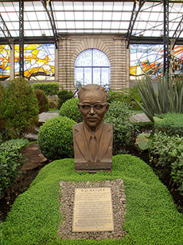

Referencias
- Butanda, A. 1989. Contribuciones de Eizi Matuda (1894-1978) al conocimiento de la flora de México. Cuadernos 1, Instituto de Biología Universidad Nacional Autónoma de México. 15-18 p.
- Garduño, S.G. et.al. 2009. Flora. En: Ceballos, G. et. al. (comps). La diversidad biológica del Estado de México: Estudio de Estado. Biblioteca mexiquense del Bicentenario, Colección Mayor. México.
- González, M. F. Homenaje a los Botánicos distinguidos de México: Eizi Matuda (1894-1978). Sociedad Botánica de México
Eizi Matuda
1894 - 1978
Eizi Matuda fue un destacado estudioso y colector de la vegetación mexicana. Nació en 1894 en Nagasaki, Japón, y murió en 1978 en Lima, Perú. Se nacionalizó mexicano en 1928.
Realizó sus estudios primarios, secundarios y de bachillerato en Nagasaki. Obtuvo el título de Maestro en Ciencias Biológicas por la Universidad Nacional de Taihoku, Japón, en 1914 y varios años después (1962) el doctorado en la Universidad de Tokio. Hasta 1921 fue profesor e investigador de diferentes centros académicos en Japón realizando estudios sobre la flora de algunas regiones de diferentes países orientales como: Hong Kong, Singapur, Japón e Indonesia.
Se mudó a México en 1922, instalándose en una colonia agrícola japonesa del Estado de Chiapas. Ahí comenzó la larga serie de exploraciones y colectas biológicas que haría a lo largo de su vida, recorriendo también otros estados de la república como Oaxaca, Veracruz, Tabasco y Campeche.
A partir de 1950 se integró como investigador al Instituto de Biología de la Universidad Nacional Autónoma de México (UNAM), y al Instituto de Investigaciones Forestales de la Secretaría de Agricultura y Ganadería.
Colaboró en la Comisión Botánica Exploradora del gobierno del Estado de México, de la cual derivaron numerosos trabajos sobre la flora del estado entre las que destacan “Las plantas mexicanas del género Yucca”, en coautoría “Las leguminosas del Estado de México” y “Las orquídeas del Estado de México”.
Describió decenas de nuevas especies de plantas. En 1932 fundó el Herbario Matuda en la Universidad de Ciencias y Artes de Chiapas. Gran parte del material de sus colectas se encuentra bajo resguardo del Herbario Nacional (MEXU) del Instituto de Biología de la UNAM.
Para saber más…
El Herbario Nacional (MEXU) es la colección más completa y representativa de las plantas mexicanas a nivel mundial, aunque también cuenta con colecciones de hongos, líquenes, frutos y semillas y maderas del país. Sus principales tareas son catalogar y clasificar los distintos ejemplares que aloja, así como realizar investigaciones en varias áreas de la diversidad vegetal, como en la conservación, evolución y la etnobotánica.
Naturalistas siglo XIX
Aportación

Jardín Botánico, Edo. de México
Fotografía: Flickr Lucy Nieto